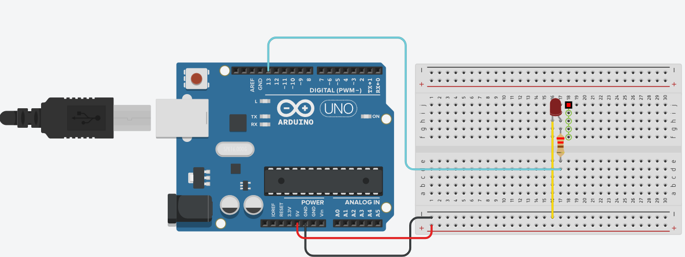
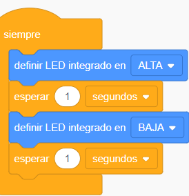

Led intermitente
Objetivo: Usar Tinkercad para la elaboración de un circuito básico con un LED intermitente, familiarizándose con los conceptos fundamentales de electrónica y programación.
Instrucciones para los estudiantes:
Accede a Tinkercad:
Inicia sesión o crea una cuenta en Tinkercad (correo personal o institucional).
En el panel principal, selecciona la opción "Circuits" (Circuitos) y luego "Crear nuevo circuito".
Componentes necesarios:
1 LED
1 Resistencia de 220Ω
1 Arduino UNO
Cables de conexión
Diseño y conexión de componentes:
- Coloca el LED en el espacio de trabajo. Asegúrate de que el ánodo (pata más larga) esté conectado al pin digital 13 del Arduino y el cátodo (pata más corta) esté conectado a una resistencia de 220Ω.
- Conecta la otra terminal de la resistencia al GND (tierra) del Arduino.
- Verifica las conexiones para asegurar que el circuito esté bien configurado.
Haz clic en la pestaña "Code" en la esquina superior derecha.
Se puede programar por "Blocks" o "Text".
Solución de la Práctica
| Software | |||
| Tinkercad | Explicación | Código por bloques | Código por texto c++ |
|  |
|
 |
void setup() { void loop() { |